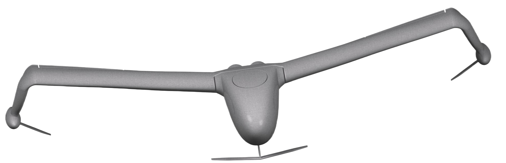
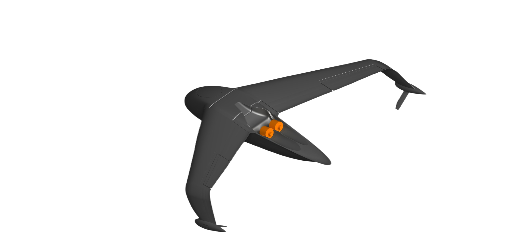
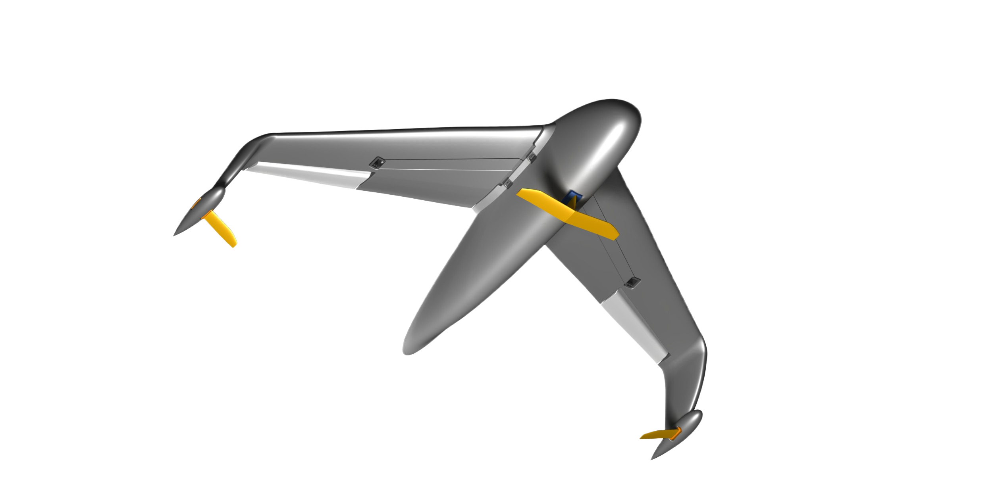

CONOPS · A
Swarm
A single carrier seeds a mesh of surveillance and attack drones, saturating an area in seconds.
Pangea · U-MAV · Ground-Effect Vehicle
The U-MAV flies like an aircraft and floats like a boat — skimming 30 centimetres above the sea at 200 km/h, beneath the radar horizon, off any runway.
01 — The Need
Ninety percent of global trade crosses water at the speed of a bicycle. Surveilling it with aircraft and helicopters is ruinously expensive and short on loiter. Boats are slow and exposed. The maritime gap is wide open.
Cargo transits at 30–60 km/h — an easy intercept for fast attack craft and an easy chokepoint to close.
Crewed airplanes and helicopters carry enormous infrastructure and environmental cost — with limited time on station.
Traffic through the Strait of Hormuz has halted amid dangerous waters; the Red Sea reroute added weeks to global shipping.
// One platform covers the strait 4–6× faster than the surface fleet it replaces.
02 — Best of both worlds
The U-MAV takes off and lands on water and obeys maritime regulations — then cruises in ground effect 30 cm above the surface, fusing the speed of an aircraft with the basing of a vessel.
AI obstacle avoidance · human-in-the-loop ground monitoring · GPS-denied navigation capable.
03 — Why a ground-effect vehicle
Ground effect fuses three traits no single asset delivers: aircraft speed, on-water basing, and a sub-radar signature.
| Attribute | U-MAV · GEV | Fixed-wing UAV | Fast boat · USV |
|---|---|---|---|
| Cruise speed | 200–250 km/h | 120–220 km/h | 40–60 km/h |
| Sea interface | Takes off & lands on water | Runway / catapult | Surface-bound |
| Radar / IR signature | Very low — surface-masked | Higher, at altitude | Low but slow |
| Patrol coverage | 4–6× a fast boat | High | Baseline |
| Survivability | Sea-skim + dynamic jump | Exposed at altitude | Easily intercepted |
| Endurance / reach | 1.5–2 h · 250–300 km | Hours, fuel-heavy | Long loiter, low reach |
04 — The aircraft
A mono-structure wing, microjet propulsion and hydrofoils for water take-off — engineered to be easy to fabricate, hard to detect, and fully loaded with mission payload.




05 — Unparalleled transparency
Cruising 30–50 cm over the surface, the U-MAV hides inside sea clutter, below the radar horizon of most maritime sensors.
Airborne above the surface, it presents no hull and no wake for sonar to track.
Designed to operate in jammed and GPS-denied environments where conventional drones are blind.
06 — Multiple defence uses
Persistent, low-cost wide-area watch across straits, EEZs and approaches.
Reach and intercept fast attack craft before they close on shipping lanes.
Carry strike and EW payloads into contested water at sub-radar altitude.
Tow acoustic and electromagnetic sensors to detect and clear underwater mines.
07 — Concepts of operation
A single carrier seeds a mesh of surveillance and attack drones, saturating an area in seconds.
From sea-skim, the U-MAV pulls a 150-metre vertical jump to clear obstacles, then drops back below radar.
Trailing acoustic and electromagnetic equipment, it hunts and neutralises underwater mines from above.
08 — We are not alone
The field is real — and it validates the physics. But every other program chases passengers or cargo. Pangea is the one tailored for stealth and the maritime fight.
09 — The mission
“In the UAE, everyone is Emirati through their love for this land and their contributions to it.”
We will emerge stronger · Pangea · Abu Dhabi
Get in touch
For defence ministries, naval primes and mission partners: request the U-MAV technical brief and CONOPS package.